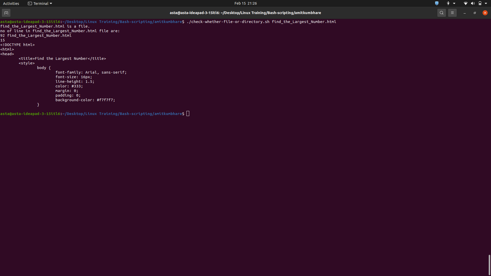

This script checks if the provided input is a file then you can print number of line present in file example enter 5 It will pint 5 lines from file.
If the input is directory then it will print the message.
#!/bin/bash for x in $* do if [[ -f $x ]] then echo "$x is a file." echo "no of line in $x file are: " wc -l $x NO=`wc -l $x` read lineno if [[ $NO > $lineno ]] then head -n $lineno $x else echo "Range Excided." fi elif [[ -d $x ]] then echo "$x is a directory." else echo "You entered Directory name, Please enter vaild file name." fi done
The output of the script is displayed in the terminal.
for loop to iterate over the command-line arguments provided.-f option with the [[ command.wc -l command.n lines of the file using the head command, where n is the line number entered by the user.